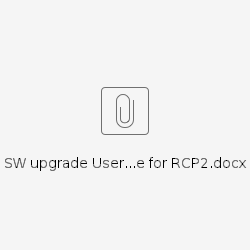

049_How to do upgrade and rollback for RCP2.0

SW upgrade User guide for RCP2.0
(UVM solution)
1.1 Install RCP SWM Tool to host controller
1.1.1 Download RCP SWM tool script from SCM build server
Download rcp_swm_tool.tgz from the link below.
http://halebopp.tre.noklab.net:8080/pilivee/RCP/rcp2.0/release/latest/tools/rcp_swm_tool.tgz
1.1.2 Upload RCP SWM tool to host controller
Decompress it and put the RCP SWM tool to the host controller as below.
[hranuser3@controller-0 rcp_swm_tool(keystone_hranuser3)]$ pwd /home/hranuser2/rcp_swm_tool [hranuser3@controller-0 rcp_swm_tool(keystone_hranuser3)]$ ls actions cli config lib lib_thirdparty log rcp_upgrade_tool.py utils |
1.2 Using OpenStack RC file in RCP SWM Tool
1.2.1 Download OpenStack RC file
Please login to OpenStack dashboard, Choose “Project”->“Compute”->”Access &Security”->”API Access”
Click “Download OpenStack RC File v2.0”, the browser will download this RC file (example: hran3-openrc.sh). You can also Click “Download OpenStack RC File v3.0”.
1.2.2 Upload OpenStack RC file to host controller and using it in RCP SWM Tool
Please upload OpenStack RC file to host controller and run ‘source’ command:
[hranuser3@controller-0 ~(keystone_hranuser2)]$ pwd /home/hranuser2 [hranuser3@controller-0 ~(keystone_hranuser2)]$ ls basic heat hran3-openrc.sh mykey.pem net openrc.hranuser3 rcp-heat-templates-v40-29-g277bb64.tar rcp_swm_tool redundant single temp [hranuser2@controller-0 ~(keystone_hranuser2)]$ chmod 777 hran2-openrc.sh [hranuser3@controller-0 ~(keystone_hranuser2)]$ source ./hran2-openrc.sh Please enter a path for your CA certificate pem file, or press enter if you are not using HTTPS <press Enter here> Please enter your OpenStack Password: < give password here. example: systeM!23> |
1.3 Prepare upgrade image
Note:
· Please make sure upgrade image version newer than current image version, RCP upgrade tool can’t validate image version during upgrade.
· The image which is used in current should not be deleted.
· The image name which is used in current should be unique.
· The image name which is used in upgrade should be unique.
· Tenant should have enough quota for the flavor of UVM.
· Stack status shall be in “<action>_complete” status. If status in “<action>_failure” or “<action>_ongoing”, upgrade VNF maybe failure.
· All instances in the stack should be in active status.
· The result of ‘dvmcli --summary-nodes’ should not has node in not-initialized status.
2 Upgrade VNF
2.1 Prepare
2.1.1 Account and SSH IP
Operator should prepare SSH private key file for “_nokrcpautoremoteuser”, which is recommended account for accessing VNF during upgrade.
[hranuser2@controller-0 ~(keystone_hranuser2)]$ nova keypair-show RCP_key ERROR (NotFound): Keypair RCP_key not found for user （if RCP_key not found, no need to execute the below command nova keypair-delete RCP_key ） [hranuser3@controller-0 ~(keystone_hranuser2)]$ nova keypair-delete RCP_key [hranuser3@controller-0 ~(keystone_hranuser2)]$ nova keypair-add RCP_key > ~/.ssh/RCP_private_key.pem [hranuser2@controller-0 ~(keystone_hranuser2)]$ nova keypair-show RCP_key [hranuser2@controller-0 ~(keystone_hranuser2)]$ nova keypair-show RCP_key | grep Public | awk -F': ' '{print $2}' > ~/.ssh/RCP_public_key.pub [hranuser2@controller-0 ~(keystone_hranuser2)]$ ls -l ~/.ssh/RCP_public_key.pub -rw------- 1 hranuser2 users 399 Aug 25 09:14 /home/hranuser2/.ssh/RCP_public_key.pub [hranuser2@controller-0 ~(keystone_hranuser2)]$ cat ~/.ssh/RCP_public_key.pub ssh-rsa AAAAB3NzaC1yc2EAAAADAQABAAABAQCzgmcW0XWxnKjhynnVn4mKg1EYj+zPtM6mJiIU8x91yWlYMVduwCWLpqpfjxYn8bEuaRlxd2yEDesFecX4lC/QJNOobbCoe7cIumQH+FEDx+3efsiPEkQkGV8aaTe6+RqyqeJDcy9OWNbfjLZep7pkkGsRHHXVd8eGeBCZFG+RckHUDpeS5SbpsyX5kQUAMbCR6MnFyEcy85krbgkzz3IDaLce/I38zV3rT5Y+EDBAYfqfmTlgHVZqtm2MjF7wsOTLE9PLNns0Ym9nubU4VZQ2yeEqagoLsm/MYmtypDzT8seocKtN6KGRaVlNXWjdaUlJlw5InbWV3DB98oJxrEJJ Generated-by-Nova
[root@mn-0:/home/robot] (Note: This below vi command is executed on RCP) # vi /opt/nokia/lib/internalsshkeys/_nokrcpautoremoteuser/authorized_keys ssh-rsa AAAAB3NzaC1yc2EAAAADAQABAAABAQDvPpEuUZBYdtcsfhA9Bnd90Kui7JmRouk2GZjYKEmOIpk0Rz9+8ZOrENiQsb9TzMnO0LjCYEwJuaBZSjV/1aXH52aa2jrPTvI0qRaU7CtFI6/ju3H8D05knqna6meWCJdDcqvQOWcyEe/vwzNuk24ObPclmzI5uL3SBPjUWz/JmQZXCJRwQBncZrUy/UGm8Ia87vOK0045EQLR0C8EjmbcoDJEgkCprEqXUbhCZ0iJgsSQUkqgEAsfIaSxJirr/hy7tucukFfe2mxnpI4McQGtNocS2q3vdCowF4B79QM2lZIOifN2aJ9600iuOXqViWQ3/T6vHCE26ee1jNMRRnCJ Generated-for-RCP-_nokrcpautoremoteuser ssh-rsa AAAAB3NzaC1yc2EAAAADAQABAAABAQDEXXkCjU7MB3/Q7gefmYM+AbjDA8PrMtR7qogSeF22gISvIeIJ0K9TCD/T8yZOz28Tui2Vu4wF9xpHx+nC9GrLB6bRy13PBcCkj82q0Q3DN41DjJadpdVGsz23IvnIvFwCmY5IALotRQbafpdKVvi1GAN4lgrlxt+UbhVmbcoMQ9MNfgYHzV5CPxXdc+wbNXx+4I5NqiO96RxjAT1qi3QBGdcbIMvbO/pxWBs/0TlQ89ROX9TMpM9M1xqehLJOnBuz4Lktyp0YVQUdf8QDchLoVE+gVvPTZDhY+09boBROSjB+mD1Mdiy7qaMfd4ePz28xs7h84e8WIybRbFx4GfzJ Generated-by-Nova (Note: Here you can found two keys in the file, please delete the one which is end with “Generated-by-Nova” and add the result of “cat ~/.ssh/RCP_public_key.pub” ) [hranuser2@controller-0 ~(keystone_hranuser2)]$ chmod 600 /home/hranuser2/.ssh/RCP_private_key.pem [hranuser3@controller-0 ~(keystone_hranuser3)]$ ssh -i ~/.ssh/RCP_private_key.pem _nokrcpautoremoteuser@10.70.15.155(management node external IP) |
SSH IP is management node external IP:
Note:
[hranuser2@controller-0 ~(keystone_hranuser2)]$ nova keypair-show RCP_key
No handlers could be found for logger "keystoneauth.identity.generic.base"
ERROR (DiscoveryFailure): Cannot use v2 authentication with domain scope
If you meet the error ‘Cannot use v2 authentication with domain scope’, please open a new ssh session for the same controller.
2.2 Upgrade VNF
Below is an example to upgrade VNF from running version to image up_demo_2:
[hranuser2@controller-0 rcp_swm_tool(keystone_hranuser2)]$ pwd /home/hranuser2/rcp_swm_tool
[hranuser2@controller-0 rcp_swm_tool(keystone_hranuser2)]$ python ./rcp_upgrade_tool.py -u -i image=RCP2.0_17.34.0 --ssh-key ~/.ssh/RCP_private_key.pem --vnf-ssh-ip 10.70.31.67 --stack cm_0828
Version: 2017.06.16
Upgrade information: user name : hranuser7 tenant name: hran7 new image : image=up_demo_2
Pre-check start ... Pre-check ok. Take snapshot for current stack. Take snapshot for current stack successfully. Create UVM instance ... Create UVM instance ok. Conversion start... Wait 60 seconds for UVM instance startup ... Check conversion result ... Conversion ok. Delete UVM instance ... Delete UVM instance ok. Stop instances: >>Stop instance as-2.local ... >>Stop instance as-0.local ... >>Stop instance as-1.local ... >>Stop instance mn-0.local ... >>Stop instance as-2.local ok. >>Stop instance as-0.local ok. >>Stop instance as-1.local ok. >>Stop instance mn-0.local ok. Stop instances ok. Update stack walle ... Update stack walle ok. Start instances: >>Start instance as-2.local ... >>Start instance as-0.local ... >>Start instance as-1.local ... >>Start instance mn-0.local ... >>Start instance as-2.local ok. >>Start instance as-0.local ok. >>Start instance as-1.local ok. >>Start instance mn-0.local ok. Start instances ok. Upgrade successfully. |
After the above output given, it means upgrade finished, all node(s) will be active in new image.
2.3 Checking VNF after upgrade
RCP upgrade tool couldn’t do full checking after upgrade, so operator need to healthy checking after upgrade.
1. UVM should be deleted and All node(s) should be started up: all nodes status should be “ACTIVE” and Power State should be “Running”.
2. Image version should be new version.
[root@mn-0:/home/robot] # swmshowversion all cp-0 RCP2.0_17.34.0_r19016-170821-092148 ei-0 RCP2.0_17.34.0_r19016-170821-092148 ei-1 RCP2.0_17.34.0_r19016-170821-092148 mn-0 RCP2.0_17.34.0_r19016-170821-092148 up-0 RCP2.0_17.34.0_r19016-170821-092148
root@mn-0 [FP] > show software version all cp-0 RCP2.0_17.34.0_r19016-170821-092148 ei-0 RCP2.0_17.34.0_r19016-170821-092148 ei-1 RCP2.0_17.34.0_r19016-170821-092148 mn-0 RCP2.0_17.34.0_r19016-170821-092148 up-0 RCP2.0_17.34.0_r19016-170821-092148 |
3. All nodes should be started up in VNF.
Use “dvmcli --list-nodes ” and “dvmcli -s <node name>”to check all nodes status:
# dvmcli --list-nodes cp-0 ei-0 ei-1 mn-0 up-0
[root@mn-0:/home/robot] # dvmcli -s cp-0 cp-0: administrative(UNLOCKED) operational(ENABLED) procedural(-) availability(-)
[root@mn-0:/home/robot] # dvmcli -s ei-0 ei-0: administrative(UNLOCKED) operational(ENABLED) procedural(-) availability(-)
[root@mn-0:/home/robot] # dvmcli -s ei-1 ei-1: administrative(UNLOCKED) operational(ENABLED) procedural(-) availability(-)
[root@mn-0:/home/robot] # dvmcli -s mn-0 mn-0: administrative(UNLOCKED) operational(ENABLED) procedural(-) availability(-)
[root@mn-0:/home/robot] # dvmcli -s up-0 up-0: administrative(UNLOCKED) operational(ENABLED) procedural(-) availability(-) |
System service should in running status:
robot@mn-0:~$ systemctl is-system-running running |
If upgrade fails, failure information will be recorded into <rcp_upgrade_tool_dir>/log/upgrade_tool.log. After upgrade, UVM will be deleted.
3 Rollback VNF
Below is an example for rollback to original build:
[hranuser2@controller-0 rcp_swm_tool(keystone_hranuser2)]$ python ./rcp_upgrade_tool.py --rollback --stack=cm_0828 Version: 2017.06.16 Rollback stack walle ... Stop instances: >>Stop instance as-2.local ... >>Stop instance as-0.local ... >>Stop instance as-1.local ... >>Stop instance mn-0.local ... >>Stop instance as-2.local ok. >>Stop instance as-0.local ok. >>Stop instance as-1.local ok. >>Stop instance mn-0.local ok. Stop instances ok. Restore walle ... Restore walle ok. Start instances: >>Start instance as-2.local ... >>Start instance as-0.local ... >>Start instance as-1.local ... >>Start instance mn-0.local ... >>Start instance as-2.local ok. >>Start instance as-0.local ok. >>Start instance as-1.local ok. >>Start instance mn-0.local ok. Start instances ok. Rollback successfully. |
If rollback fails, failure information will be reported into <rcp_upgrade_tool_dir>/log/upgrade_tool.log.